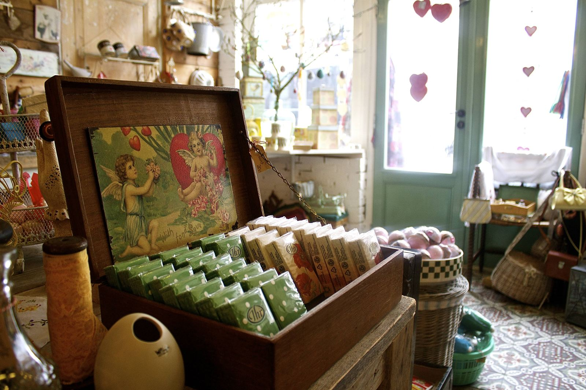
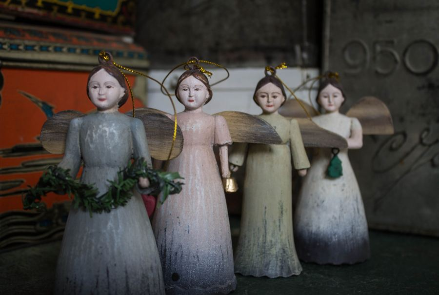
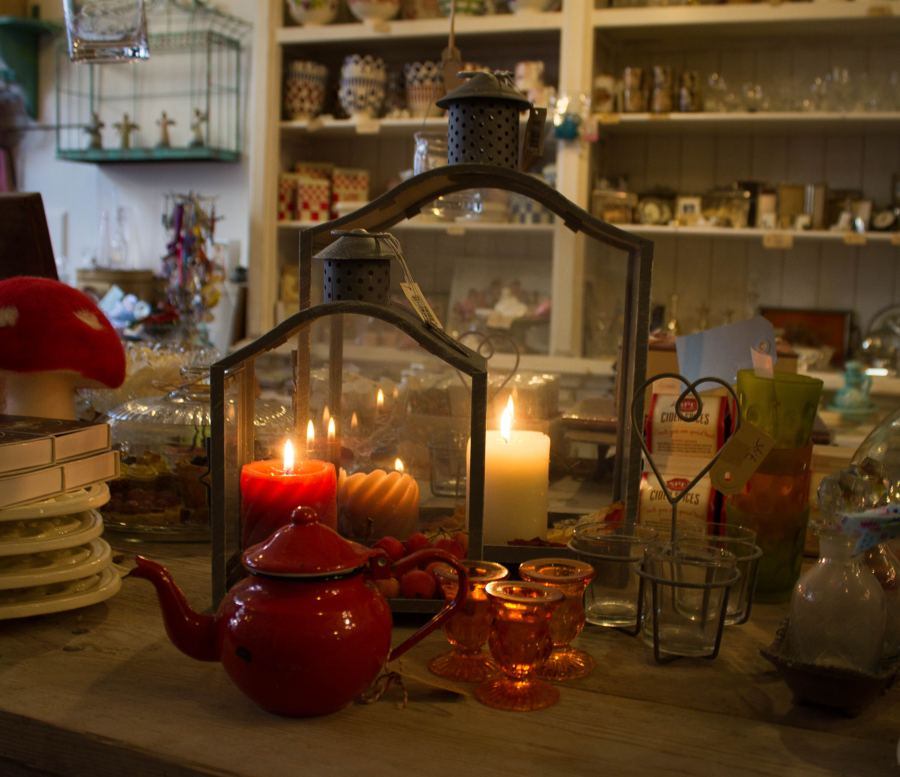
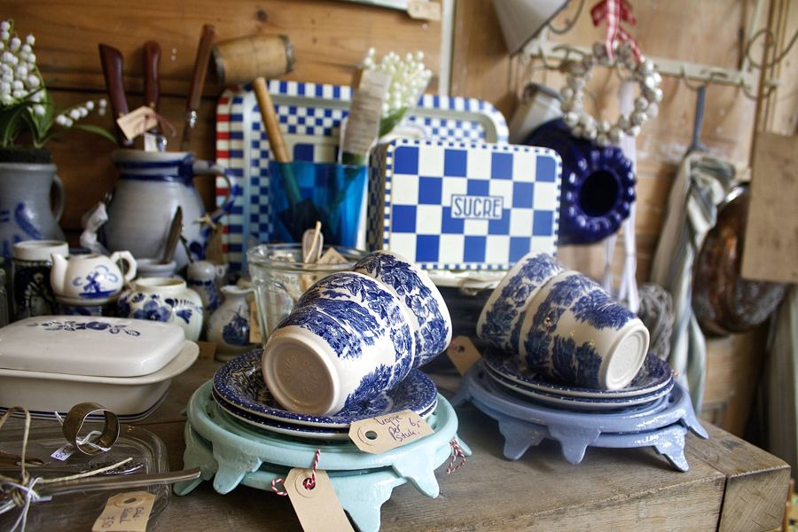
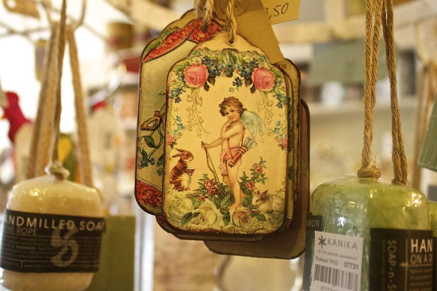
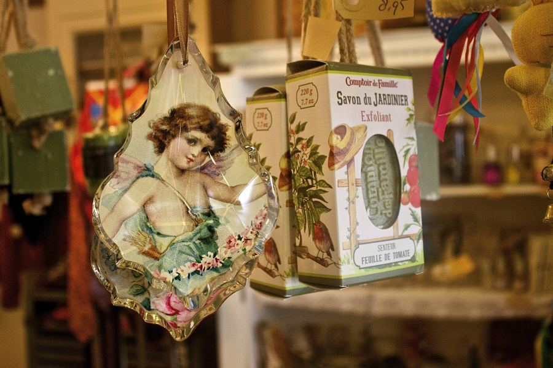
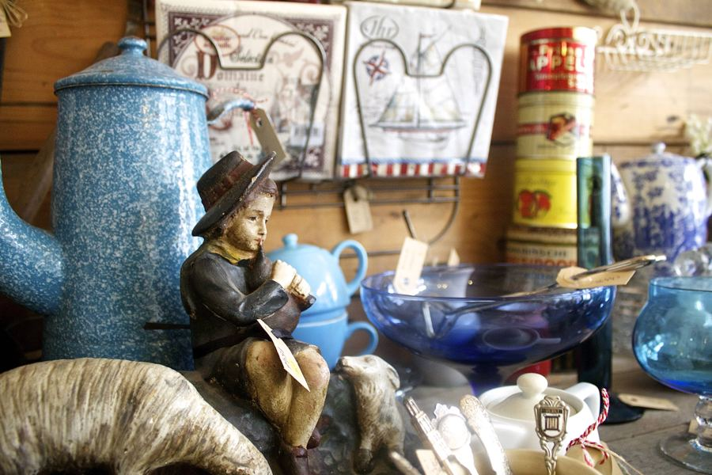

Na acht en een half jaar is de winkel van 't Weeskind in Culemborg gesloten. U vindt ons nu op diverse markten, met mooie brocante, antiek en cadeaux.
Onze specialiteit: antieke kerstversiering.
Waar staan we
- 18 t/m 21 november Tuincentrum Vaarderhoogt, Soest met antieke kerstversiering
- 12 en 13 december Kerstfair, Culemborg
Eerder dit jaar: Landgoedfair Marienwaerdt, 20 t/m 23 augustus.
Nieuwe data volgen. Kijk op Facebook voor het laatste nieuws.
Volg ons op Facebook voor de actuele ontwikkelingen.






Contact
Telefoon 06 20059114
Waarom 't Weeskind?
Het Elisabeth Weeshuis (Herenstraat 29) is één van de oudste gebouwen uit Culemborg. De schatrijke en kinderloze Vrouwe Elisabeth, gravin van Culemborg, liet het grootste deel van haar vermogen na aan de armen van de stad. Met het deel van het geld werd het Elisabeth Weeshuis gebouwd. In het huis woonden nog tot 1952 weeskinderen. Tegenwoordig is er een museum en bibliotheek gevestigd.
In de pers
- Buitenleven (juni 2009): De leukste adressen van Culemborg
- Landelijke leefstijl gids (2009): een gids met landelijke adresjes
- Libelle Balance (juli 2008): Nostalgie in glas
- Culemborgse Courant (juni 2008): Romantische cadeaus bij Het Weeskind